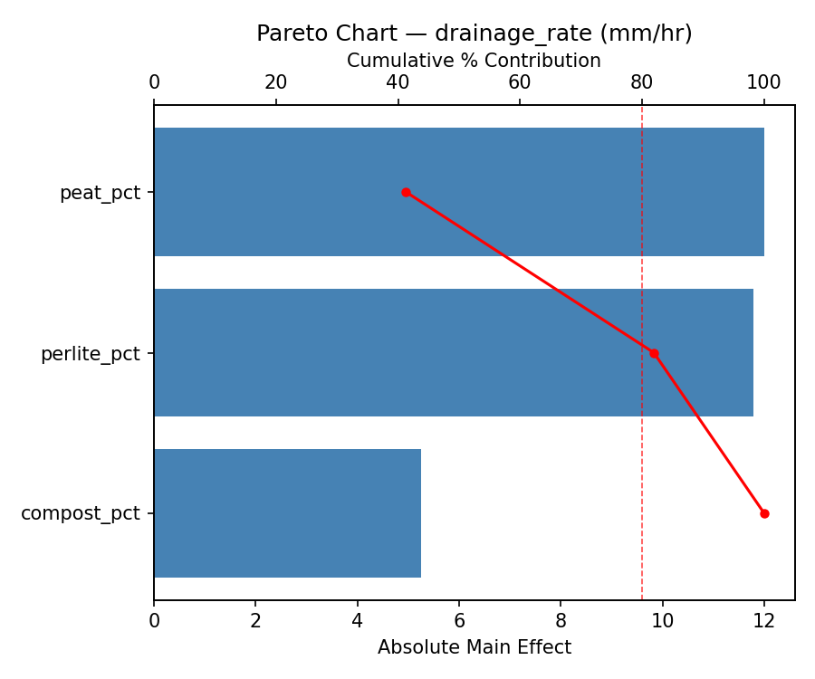
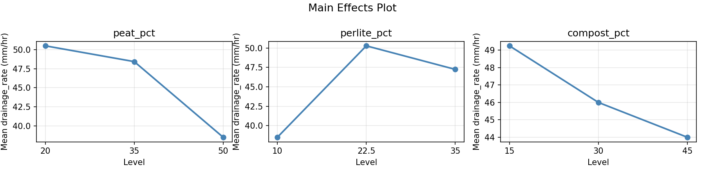
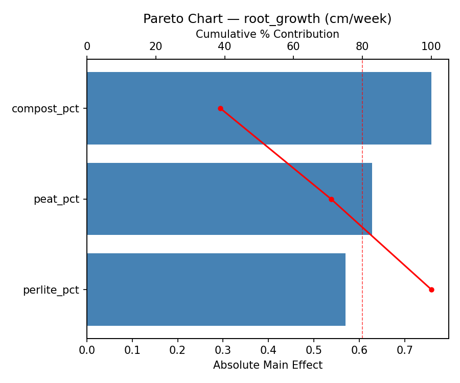
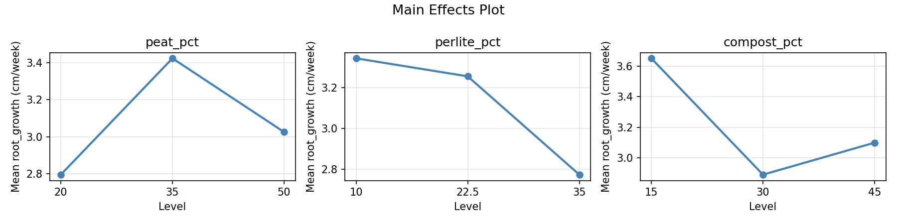
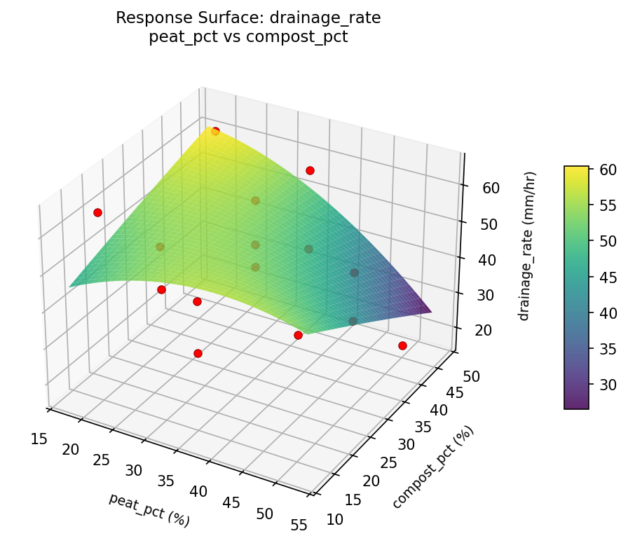
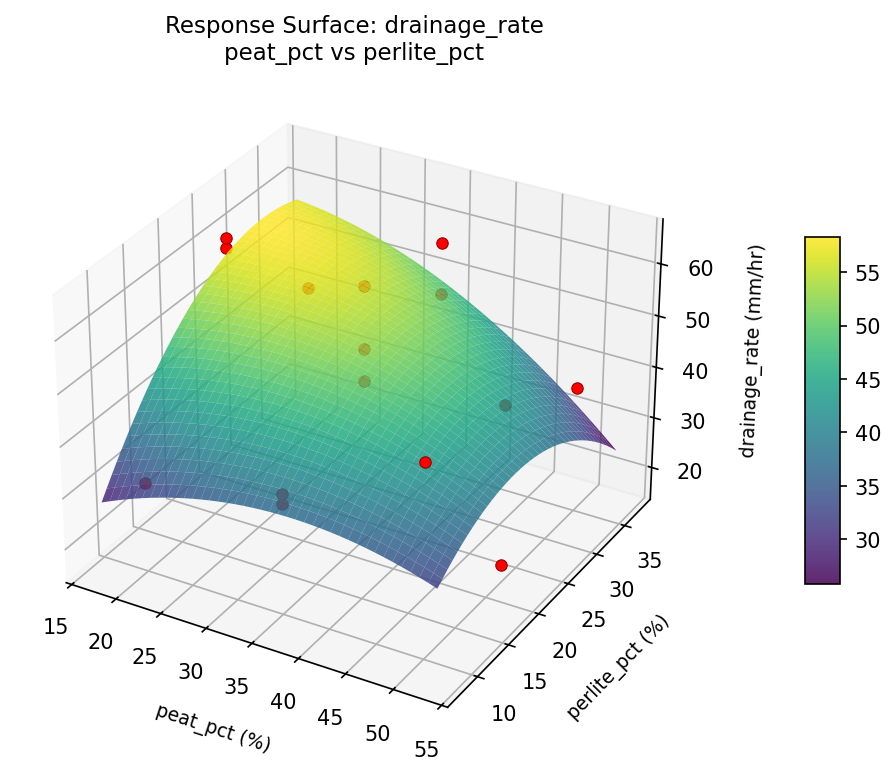
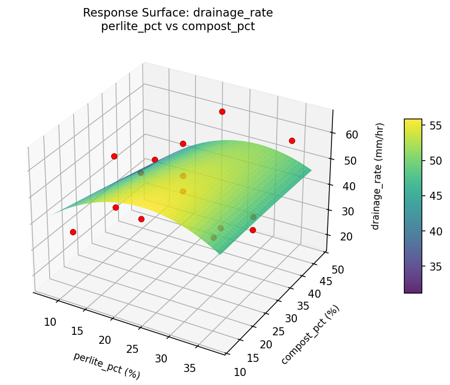
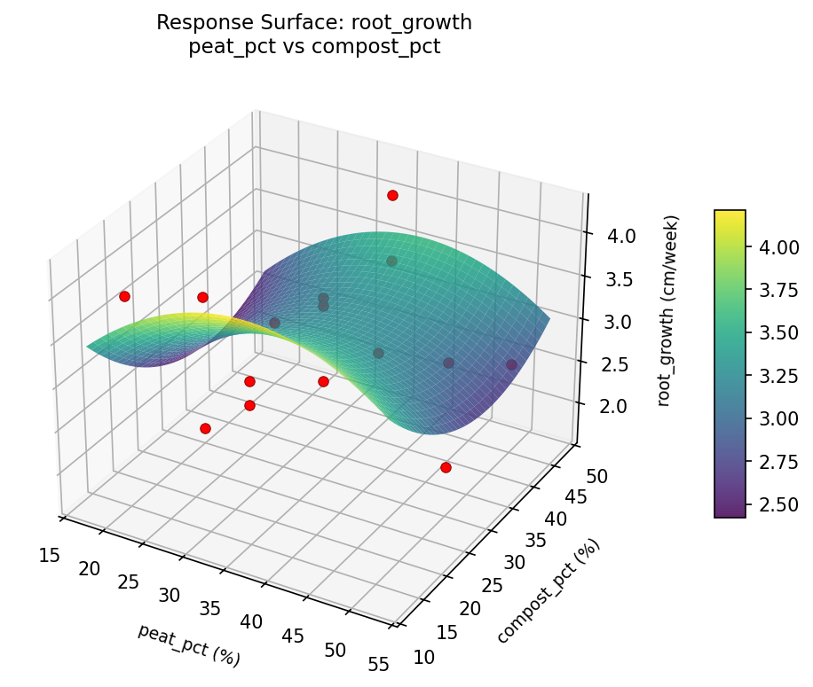
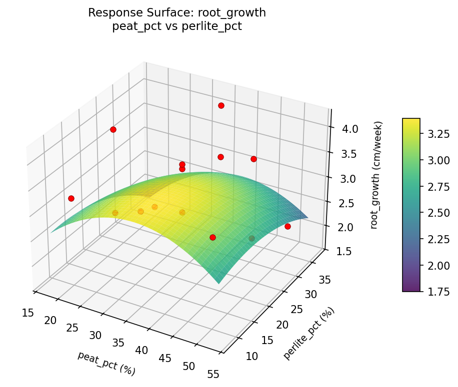
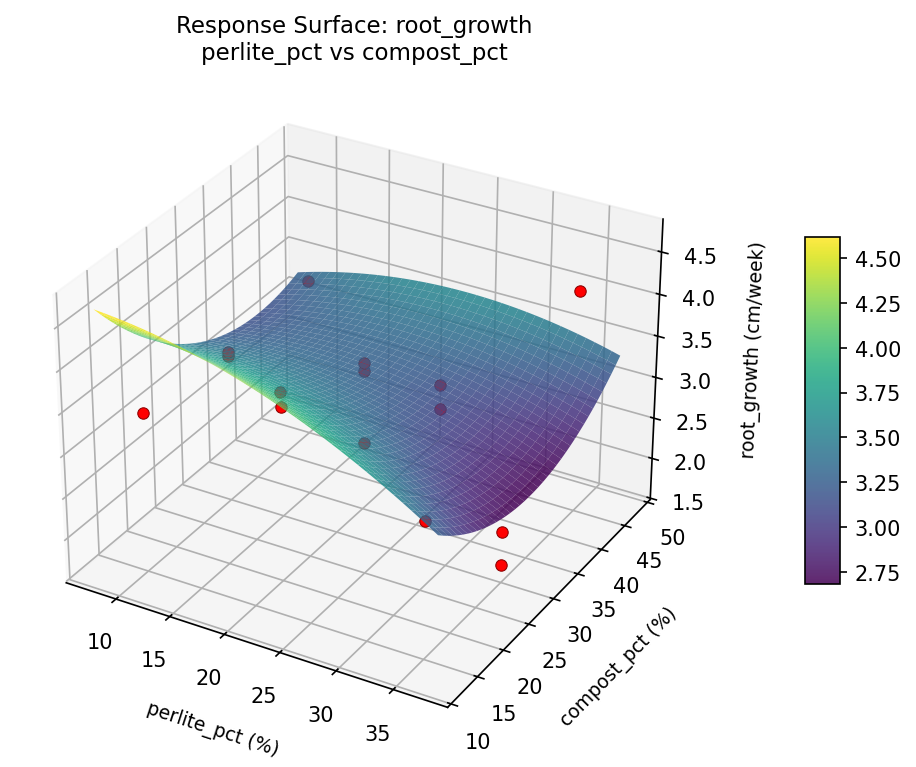

Experimental Setup
Factors
| Factor | Low | High | Unit |
|---|
peat_pct | 20 | 50 | % |
perlite_pct | 10 | 35 | % |
compost_pct | 15 | 45 | % |
Fixed: bed_depth_cm = 30, remaining_topsoil = balance
Responses
| Response | Direction | Unit |
|---|
drainage_rate | ↑ maximize | mm/hr |
root_growth | ↑ maximize | cm/week |
Configuration
{
"metadata": {
"name": "Raised Bed Soil Mix",
"description": "Box-Behnken design to optimize drainage and root growth by tuning peat moss ratio, perlite ratio, and compost ratio in a raised bed mix"
},
"factors": [
{
"name": "peat_pct",
"levels": [
"20",
"50"
],
"type": "continuous",
"unit": "%"
},
{
"name": "perlite_pct",
"levels": [
"10",
"35"
],
"type": "continuous",
"unit": "%"
},
{
"name": "compost_pct",
"levels": [
"15",
"45"
],
"type": "continuous",
"unit": "%"
}
],
"fixed_factors": {
"bed_depth_cm": "30",
"remaining_topsoil": "balance"
},
"responses": [
{
"name": "drainage_rate",
"optimize": "maximize",
"unit": "mm/hr"
},
{
"name": "root_growth",
"optimize": "maximize",
"unit": "cm/week"
}
],
"settings": {
"operation": "box_behnken",
"test_script": "use_cases/106_raised_bed_mix/sim.sh"
}
}
Experimental Matrix
The Box-Behnken Design produces 15 runs. Each row is one experiment with specific factor settings.
| Run | peat_pct | perlite_pct | compost_pct |
|---|
| 1 | 35 | 10 | 15 |
| 2 | 35 | 22.5 | 30 |
| 3 | 50 | 22.5 | 45 |
| 4 | 50 | 22.5 | 15 |
| 5 | 35 | 22.5 | 30 |
| 6 | 35 | 22.5 | 30 |
| 7 | 20 | 22.5 | 45 |
| 8 | 50 | 10 | 30 |
| 9 | 35 | 10 | 45 |
| 10 | 50 | 35 | 30 |
| 11 | 20 | 22.5 | 15 |
| 12 | 35 | 35 | 45 |
| 13 | 20 | 10 | 30 |
| 14 | 20 | 35 | 30 |
| 15 | 35 | 35 | 15 |
Step-by-Step Workflow
1
Preview the design
$ python doe.py info --config use_cases/106_raised_bed_mix/config.json
2
Generate the runner script
$ python doe.py generate --config use_cases/106_raised_bed_mix/config.json \
--output use_cases/106_raised_bed_mix/results/run.sh --seed 42
3
Execute the experiments
$ bash use_cases/106_raised_bed_mix/results/run.sh
4
Analyze results
$ python doe.py analyze --config use_cases/106_raised_bed_mix/config.json
5
Get optimization recommendations
$ python doe.py optimize --config use_cases/106_raised_bed_mix/config.json
6
Generate the HTML report
$ python doe.py report --config use_cases/106_raised_bed_mix/config.json \
--output use_cases/106_raised_bed_mix/results/report.html
Features Exercised
| Feature | Value |
|---|
| Design type | box_behnken |
| Factor types | continuous (all 3) |
| Arg style | double-dash |
| Responses | 2 (drainage_rate ↑, root_growth ↑) |
| Total runs | 15 |
Analysis Results
Generated from actual experiment runs using the DOE Helper Tool.
Response: drainage_rate
Top factors: peat_pct (41.3%), perlite_pct (40.6%), compost_pct (18.1%).
Pareto Chart

Main Effects Plot

Response: root_growth
Top factors: compost_pct (38.8%), peat_pct (32.1%), perlite_pct (29.1%).
Pareto Chart

Main Effects Plot

Response Surface Plots
3D surfaces fitted with quadratic RSM. Red dots are observed data points.
drainage rate peat pct vs compost pct

drainage rate peat pct vs perlite pct

drainage rate perlite pct vs compost pct

root growth peat pct vs compost pct

root growth peat pct vs perlite pct

root growth perlite pct vs compost pct

Full Analysis Output
RSM surface: rsm_drainage_rate_peat_pct_vs_perlite_pct.png
RSM surface: rsm_drainage_rate_peat_pct_vs_compost_pct.png
RSM surface: rsm_drainage_rate_perlite_pct_vs_compost_pct.png
RSM surface: rsm_root_growth_peat_pct_vs_perlite_pct.png
RSM surface: rsm_root_growth_peat_pct_vs_compost_pct.png
RSM surface: rsm_root_growth_perlite_pct_vs_compost_pct.png
=== Main Effects: drainage_rate ===
Factor Effect Std Error % Contribution
--------------------------------------------------------------
peat_pct 12.0000 3.4581 41.3%
perlite_pct 11.7857 3.4581 40.6%
compost_pct 5.2500 3.4581 18.1%
=== Summary Statistics: drainage_rate ===
peat_pct:
Level N Mean Std Min Max
------------------------------------------------------------
20 4 50.5000 16.3605 31.0000 65.0000
35 7 48.4286 10.4380 35.0000 63.0000
50 4 38.5000 15.3731 17.0000 51.0000
perlite_pct:
Level N Mean Std Min Max
------------------------------------------------------------
10 4 38.5000 8.6987 31.0000 51.0000
22.5 7 50.2857 16.7403 17.0000 65.0000
35 4 47.2500 9.0323 38.0000 59.0000
compost_pct:
Level N Mean Std Min Max
------------------------------------------------------------
15 4 49.2500 12.2848 35.0000 65.0000
30 7 46.0000 10.3118 31.0000 63.0000
45 4 44.0000 21.3229 17.0000 63.0000
=== Main Effects: root_growth ===
Factor Effect Std Error % Contribution
--------------------------------------------------------------
compost_pct 0.7586 0.1915 38.8%
peat_pct 0.6279 0.1915 32.1%
perlite_pct 0.5700 0.1915 29.1%
=== Summary Statistics: root_growth ===
peat_pct:
Level N Mean Std Min Max
------------------------------------------------------------
20 4 2.7950 1.0041 1.7000 3.9500
35 7 3.4229 0.4556 2.6800 4.1600
50 4 3.0250 0.8837 2.1000 4.1200
perlite_pct:
Level N Mean Std Min Max
------------------------------------------------------------
10 4 3.3425 0.0695 3.2600 3.4000
22.5 7 3.2543 0.7345 2.2700 4.1200
35 4 2.7725 1.1039 1.7000 4.1600
compost_pct:
Level N Mean Std Min Max
------------------------------------------------------------
15 4 3.6500 0.4632 3.1300 4.1200
30 7 2.8914 0.7523 1.7000 3.6400
45 4 3.1000 0.8531 2.2700 4.1600
Pareto chart (drainage_rate): use_cases/106_raised_bed_mix/results/analysis/pareto_drainage_rate.png
Pareto chart (root_growth): use_cases/106_raised_bed_mix/results/analysis/pareto_root_growth.png
Main effects (drainage_rate): use_cases/106_raised_bed_mix/results/analysis/main_effects_drainage_rate.png
Main effects (root_growth): use_cases/106_raised_bed_mix/results/analysis/main_effects_root_growth.png
Optimization Recommendations
=== Optimization: drainage_rate ===
Direction: maximize
Best observed run: #10
peat_pct = 35
perlite_pct = 35
compost_pct = 45
Value: 65.0
RSM Model (linear, R² = 0.4148, Adj R² = 0.2552):
Coefficients:
intercept +46.3333
peat_pct +0.2500
perlite_pct +0.8750
compost_pct +11.3750
RSM Model (quadratic, R² = 0.7709, Adj R² = 0.3586):
Coefficients:
intercept +53.0000
peat_pct +0.2500
perlite_pct +0.8750
compost_pct +11.3750
peat_pct*perlite_pct -3.7500
peat_pct*compost_pct -10.7500
perlite_pct*compost_pct +6.5000
peat_pct^2 -3.0000
perlite_pct^2 -2.7500
compost_pct^2 -6.7500
Curvature analysis:
compost_pct coef=-6.7500 concave (has a maximum)
peat_pct coef=-3.0000 concave (has a maximum)
perlite_pct coef=-2.7500 concave (has a maximum)
Notable interactions:
peat_pct*compost_pct coef=-10.7500 (antagonistic)
perlite_pct*compost_pct coef=+6.5000 (synergistic)
peat_pct*perlite_pct coef=-3.7500 (antagonistic)
Predicted optimum (from quadratic model):
peat_pct = 20
perlite_pct = 22.5
compost_pct = 45
Predicted value: 65.1250
Model quality: Good fit — general trends are captured, some noise remains.
Factor importance:
1. compost_pct (effect: 22.8, contribution: 80.5%)
2. perlite_pct (effect: 2.9, contribution: 10.4%)
3. peat_pct (effect: 2.6, contribution: 9.1%)
=== Optimization: root_growth ===
Direction: maximize
Best observed run: #12
peat_pct = 35
perlite_pct = 22.5
compost_pct = 30
Value: 4.16
RSM Model (linear, R² = 0.0762, Adj R² = -0.1757):
Coefficients:
intercept +3.1493
peat_pct +0.1838
perlite_pct +0.1763
compost_pct -0.0925
RSM Model (quadratic, R² = 0.4180, Adj R² = -0.6296):
Coefficients:
intercept +3.4133
peat_pct +0.1838
perlite_pct +0.1763
compost_pct -0.0925
peat_pct*perlite_pct -0.4300
peat_pct*compost_pct +0.2175
perlite_pct*compost_pct +0.5975
peat_pct^2 -0.1592
perlite_pct^2 -0.2092
compost_pct^2 -0.1267
Curvature analysis:
perlite_pct coef=-0.2092 concave (has a maximum)
peat_pct coef=-0.1592 concave (has a maximum)
compost_pct coef=-0.1267 concave (has a maximum)
Notable interactions:
perlite_pct*compost_pct coef=+0.5975 (synergistic)
peat_pct*perlite_pct coef=-0.4300 (antagonistic)
Predicted optimum (from linear model):
peat_pct = 50
perlite_pct = 35
compost_pct = 30
Predicted value: 3.5093
Model quality: Weak fit — consider adding center points or using a different design.
Factor importance:
1. peat_pct (effect: 0.4, contribution: 39.7%)
2. perlite_pct (effect: 0.4, contribution: 39.4%)
3. compost_pct (effect: 0.2, contribution: 20.8%)